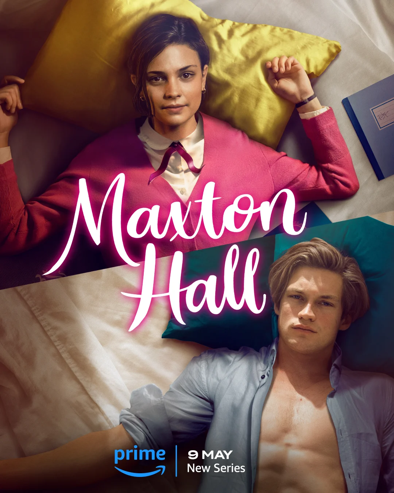

Uma série adaptada do livro"Save Me" tendo o gênero de Romance, Dram, Soap Opera.
A série teve sua estreia no dia 9 de maio de 2024, sendo o lançamento de série de maior sucesso de qualquer Prime Original estrangeiro de todos os tempos, se tornando a série mais popular do Prime Vídeo a nível mundial logo após sua estreia, ocupando o primeiro lugar nas paradas em mais de 120 regiões.
Ruby Bell, uma jovem brilhante e determinada, entra no mundo opulento de Maxton Hall com uma bolsa de estudos. Seu principal objetivo é garantir uma vaga na Universidade de Oxford, ao contrário de seus colegas mais ricos que apresentam um comportamento extravagante e despreocupado. Entre eles está James Beaufort, um herdeiro arrogante, cuja vida gira em torno de privilégios.
Após se esquecer de enviar um documento ao Sr. Sutton (um de seus professores), para sua carta de indicação, Ruby se depara com Lydia Beaufort tendo um caso com o professor. Lydia, imaginando que Ruby iria expor seu relacionamento com o Sr. Sutton, recorre ao seu irmão James para ajudá-la. James tenta subornar Ruby, que por sua vez recusa todas as suas tentativas.
Ruby então pede ao diretor da escola, Sr. Lexington, que escreva a carta de recomendação ao invés do Sr. Sutton, já que ela não o tem mais em alta consideração como antes. Ruby informa ao Sr. Lexington que ela é a presidente do comitê de organização de eventos, dessa forma ele faz um acordo com Ruby: se ela conseguir realizar o próximo evento tendo como objetivo atrair potenciais novos alunos e ser bem sucedida, ele consideraria escrever a carta para ela.
Enquanto isso, Sutton termina com Lydia mesmo depois dela implorar para manter as coisas como estão. Acreditando que Ruby tem a intenção de revelar o segredo de Lydia, arruinando o nome de sua família, James contrata strippers para boicotar a festa de Ruby para a escola.